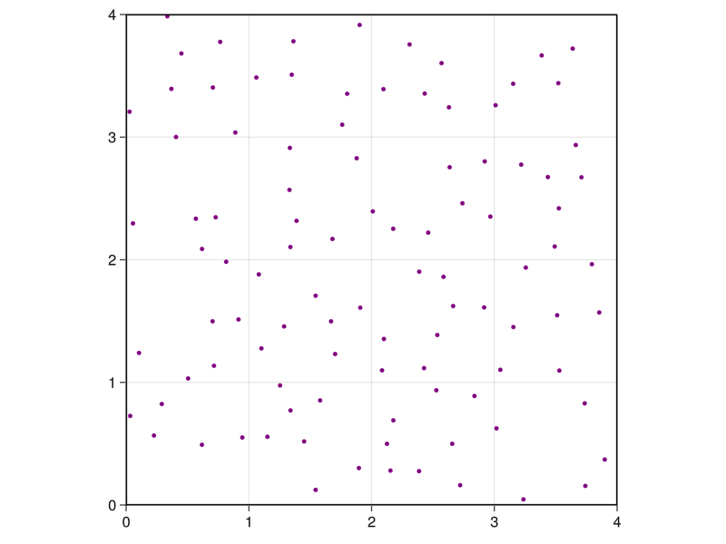

Molly documentation
This documentation will first introduce the main features of the package with some examples, then will give details on each component of a simulation. There are further examples in the Molly examples section. For more information on specific types or functions, see the Molly API section or call ?function_name in Julia. The Differentiable simulation with Molly section describes taking gradients through simulations.
Molly takes a modular approach to molecular simulation. To run a simulation you create a System object and call simulate! on it. The different components of the system and simulation can be used as defined by the package, or you can define your own versions. An important principle of the package is that your custom components, particularly force functions, should be easy to define and just as performant as the built-in versions.
Simulation basics
Let's look at the simulation of a fluid acting under the Lennard-Jones potential to start with. First, we'll need some atoms with the relevant parameters defined.
using Molly
n_atoms = 100
atom_mass = 10.0u"u"
atoms = [Atom(mass=atom_mass, σ=0.3u"nm", ϵ=0.2u"kJ * mol^-1") for i in 1:n_atoms]See the Unitful.jl docs for more information on the unit annotations. Molly re-exports Unitful.jl, StaticArrays.jl and AtomsBase.jl since they are often required to run simulations. You can use your own atom types in Molly, provided that the mass function is defined and any fields required by the interactions are present. Next, we'll need some starting coordinates and velocities.
boundary = CubicBoundary(2.0u"nm", 2.0u"nm", 2.0u"nm") # Periodic boundary conditions
coords = place_atoms(n_atoms, boundary; min_dist=0.3u"nm") # Random placement without clashing
temp = 100.0u"K"
velocities = [velocity(atom_mass, temp) for i in 1:n_atoms]We store the coordinates and velocities as static arrays for performance. They can be of 2 or 3 dimensions and of any number type, e.g. Float64 or Float32. Setting individual dimensions in a CubicBoundary to Inf * u"nm" makes the simulation have no boundary in that dimension. You can also use a TriclinicBoundary. Simulations in 2 dimensions should use a RectangularBoundary.
Now we can define our pairwise interactions, i.e. those between most or all atom pairs. Because we have defined the relevant parameters for the atoms, we can use the built-in Lennard-Jones type.
pairwise_inters = (LennardJones(),) # Don't forget the trailing comma!Finally, we can define the system and run the simulation. We use an Andersen thermostat to keep a constant temperature, and we log the temperature and coordinates every 10 steps. Periodic boundary conditions are automatically used with the cubic box we defined earlier.
sys = System(
atoms=atoms,
pairwise_inters=pairwise_inters,
coords=coords,
velocities=velocities,
boundary=boundary,
loggers=(
temp=TemperatureLogger(10),
coords=CoordinateLogger(10),
),
)
simulator = VelocityVerlet(
dt=0.002u"ps",
coupling=AndersenThermostat(temp, 1.0u"ps"),
)
simulate!(sys, simulator, 1_000)atoms, coords and boundary are the minimum required properties to define a System, though you would generally want to add interactions to a System to do something useful with it.
System implements the AbstractSystem interface from AtomsBase.jl. The functions masses, is_gpu_diff_safe, is_on_gpu and float_type can be used on a System.
By default the simulation is run in parallel on the number of threads available to Julia, but this behaviour can be changed by giving the keyword argument n_threads to simulate!. For example, n_threads=1 uses no parallelization.
The values stored by the loggers can be accessed using values, e.g. values(sys.loggers.coords). An animation of the stored coordinates can be saved by using visualize, which is available when GLMakie.jl is imported.
using GLMakie
visualize(sys.loggers.coords, boundary, "sim_lj.mp4")
GPU acceleration
To run simulations on the GPU you will need to have a CUDA-compatible device and to have CUDA.jl installed. Simulation setup is similar to above, but with the coordinates, velocities and atoms moved to the GPU. This example also shows setting up a simulation to run with Float32, which gives better performance on GPUs. Of course, you will need to determine whether this level of numerical accuracy is appropriate in your case. The GPU code path is currently designed to work with differentiable simulation and runs slower than related software, but this is an active area of development.
using Molly
using CUDA
n_atoms = 100
atom_mass = 10.0f0u"u"
boundary = CubicBoundary(2.0f0u"nm", 2.0f0u"nm", 2.0f0u"nm")
temp = 100.0f0u"K"
atoms = CuArray([Atom(mass=atom_mass, σ=0.3f0u"nm", ϵ=0.2f0u"kJ * mol^-1") for i in 1:n_atoms])
coords = CuArray(place_atoms(n_atoms, boundary; min_dist=0.3u"nm"))
velocities = CuArray([velocity(atom_mass, temp) for i in 1:n_atoms])
simulator = VelocityVerlet(dt=0.002f0u"ps")
sys = System(
atoms=atoms,
pairwise_inters=(LennardJones(),),
coords=coords,
velocities=velocities,
boundary=boundary,
loggers=(
temp=TemperatureLogger(typeof(1.0f0u"K"), 10),
coords=CoordinateLogger(typeof(1.0f0u"nm"), 10),
),
)
simulate!(sys, simulator, 1_000)Simulating diatomic molecules
If we want to define specific interactions between atoms, for example bonds, we can do this as well. Using the same definitions as the first example, let's set up the coordinates so that paired atoms are 1 Å apart.
coords = place_atoms(n_atoms ÷ 2, boundary; min_dist=0.3u"nm")
for i in 1:length(coords)
push!(coords, coords[i] .+ [0.1, 0.0, 0.0]u"nm")
end
velocities = [velocity(atom_mass, temp) for i in 1:n_atoms]We could have used place_diatomics instead here. Now we can use the built-in interaction list and bond types to place harmonic bonds between paired atoms.
bonds = InteractionList2Atoms(
collect(1:(n_atoms ÷ 2)), # First atom indices
collect((1 + n_atoms ÷ 2):n_atoms), # Second atom indices
repeat([""], n_atoms ÷ 2), # Bond types
[HarmonicBond(k=300_000.0u"kJ * mol^-1 * nm^-2", r0=0.1u"nm") for i in 1:(n_atoms ÷ 2)],
)
specific_inter_lists = (bonds,)This time, we are also going to use a neighbor list to speed up the Lennard Jones calculation. We can use the built-in DistanceNeighborFinder. The arguments are a 2D array of eligible interacting pairs, the number of steps between each update and the distance cutoff to be classed as a neighbor. Since the neighbor finder is run every 10 steps we should also use a cutoff for the interaction with a cutoff distance less than the neighbor list distance.
# All pairs apart from bonded pairs are eligible for non-bonded interactions
nb_matrix = trues(n_atoms, n_atoms)
for i in 1:(n_atoms ÷ 2)
nb_matrix[i, i + (n_atoms ÷ 2)] = false
nb_matrix[i + (n_atoms ÷ 2), i] = false
end
neighbor_finder = DistanceNeighborFinder(
nb_matrix=nb_matrix,
n_steps=10,
dist_cutoff=1.5u"nm",
)
pairwise_inters = (LennardJones(nl_only=true, cutoff=DistanceCutoff(1.2u"nm")),)Now we can simulate as before.
sys = System(
atoms=atoms,
pairwise_inters=pairwise_inters,
specific_inter_lists=specific_inter_lists,
coords=coords,
velocities=velocities,
boundary=boundary,
neighbor_finder=neighbor_finder,
loggers=(
temp=TemperatureLogger(10),
coords=CoordinateLogger(10),
),
)
simulator = VelocityVerlet(
dt=0.002u"ps",
coupling=AndersenThermostat(temp, 1.0u"ps"),
)
simulate!(sys, simulator, 1_000)This time when we view the trajectory we can add lines to show the bonds.
visualize(
sys.loggers.coords,
boundary,
"sim_diatomic.mp4";
connections=[(i, i + (n_atoms ÷ 2)) for i in 1:(n_atoms ÷ 2)],
)Simulating gravity
Molly is geared primarily to molecular simulation, but can also be used to simulate other physical systems. Let's set up a gravitational simulation. This example also shows the use of Float32, a 2D simulation and no specified units.
atoms = [Atom(mass=1.0f0), Atom(mass=1.0f0)]
coords = [SVector(0.3f0, 0.5f0), SVector(0.7f0, 0.5f0)]
velocities = [SVector(0.0f0, 1.0f0), SVector(0.0f0, -1.0f0)]
pairwise_inters = (Gravity(nl_only=false, G=1.5f0),)
simulator = VelocityVerlet(dt=0.002f0)
boundary = RectangularBoundary(1.0f0, 1.0f0)
sys = System(
atoms=atoms,
pairwise_inters=pairwise_inters,
coords=coords,
velocities=velocities,
boundary=boundary,
loggers=(coords=CoordinateLogger(Float32, 10; dims=2),),
force_units=NoUnits,
energy_units=NoUnits,
)
simulate!(sys, simulator, 2_000)When we view the simulation we can use some extra options:
visualize(
sys.loggers.coords,
boundary,
"sim_gravity.mp4";
trails=4,
framerate=15,
color=[:orange, :lightgreen],
)Simulating a protein
The recommended way to run a macromolecular simulation is to read in a force field in OpenMM XML format and read in a coordinate file in a format supported by Chemfiles.jl. Files for common force fields can be found at OpenMM and OpenMM force fields. This sets up a system in the same data structures as above and that is simulated in the same way. Here we carry out an energy minimization, simulate with a Langevin integrator and use a StructureWriter to write the trajectory as a PDB file.
data_dir = joinpath(dirname(pathof(Molly)), "..", "data")
ff = OpenMMForceField(
joinpath(data_dir, "force_fields", "ff99SBildn.xml"),
joinpath(data_dir, "force_fields", "tip3p_standard.xml"),
joinpath(data_dir, "force_fields", "his.xml"),
)
sys = System(
joinpath(data_dir, "6mrr_equil.pdb"),
ff;
loggers=(
energy=TotalEnergyLogger(10),
writer=StructureWriter(10, "traj_6mrr_1ps.pdb", ["HOH"]),
),
)
minimizer = SteepestDescentMinimizer()
simulate!(sys, minimizer)
random_velocities!(sys, 298.0u"K")
simulator = Langevin(
dt=0.001u"ps",
temperature=300.0u"K",
friction=1.0u"ps^-1",
)
simulate!(sys, simulator, 5_000; n_threads=Threads.nthreads())You can use an implicit solvent method by giving the implicit_solvent keyword argument to System. The options are "obc1", "obc2" and "gbn2", corresponding to the Onufriev-Bashford-Case GBSA model with parameter set I or II and the GB-Neck2 model. Other options include overriding the boundary dimensions in the file (boundary) and modifying the non-bonded interaction and neighbor list cutoff distances (dist_cutoff and dist_neighbors).
Molly also has a rudimentary parser of Gromacs topology and coordinate files.
sys = System(
joinpath(dirname(pathof(Molly)), "..", "data", "5XER", "gmx_coords.gro"),
joinpath(dirname(pathof(Molly)), "..", "data", "5XER", "gmx_top_ff.top");
loggers=(
temp=TemperatureLogger(10),
writer=StructureWriter(10, "traj_5XER_1ps.pdb"),
),
)
temp = 298.0u"K"
random_velocities!(sys, temp)
simulator = Verlet(
dt=0.0002u"ps",
coupling=BerendsenThermostat(temp, 1.0u"ps"),
)
simulate!(sys, simulator, 5_000)Harmonic position restraints can be added to a System for equilibration using add_position_restraints:
sys_res = add_position_restraints(
sys,
100_000.0u"kJ * mol^-1 * nm^-2";
atom_selector=is_heavy_atom,
)The OpenMM setup procedure is tested against OpenMM in terms of matching forces and energies. However it is not thoroughly tested with respect to ligands or special residues and requires that atom names exactly match residue templates. The Gromacs setup procedure should be considered experimental. Currently Ewald summation methods, constraint algorithms, pressure coupling and high GPU performance are missing from the package, so Molly is not suitable for production simulations of biomolecules.
Enhanced sampling
Molly has the ReplicaSystem struct and simulators such as TemperatureREMD to carry out replica exchange molecular dynamics (REMD). On CPU these are run in parallel by dividing up the number of available threads. For example to run temperature REMD on a protein with 4 replicas and attempt exchanges every 1.0 ps:
using Statistics
data_dir = joinpath(dirname(pathof(Molly)), "..", "data")
ff = OpenMMForceField(
joinpath(data_dir, "force_fields", "ff99SBildn.xml"),
joinpath(data_dir, "force_fields", "tip3p_standard.xml"),
joinpath(data_dir, "force_fields", "his.xml"),
)
sys = System(joinpath(data_dir, "6mrr_equil.pdb"), ff)
minimizer = SteepestDescentMinimizer()
simulate!(sys, minimizer)
n_replicas = 4
rep_sys = ReplicaSystem(
atoms=sys.atoms,
atoms_data=sys.atoms_data,
pairwise_inters=sys.pairwise_inters,
specific_inter_lists=sys.specific_inter_lists,
general_inters=sys.general_inters,
n_replicas=n_replicas,
replica_coords=[copy(sys.coords) for _ in 1:n_replicas],
boundary=sys.boundary,
neighbor_finder=sys.neighbor_finder,
replica_loggers=[(temp=TemperatureLogger(10),) for _ in 1:n_replicas],
)
temps = [240.0u"K", 280.0u"K", 320.0u"K", 360.0u"K"]
dt = 0.0005u"ps"
simulators = [Langevin(dt=dt, temperature=temp, friction=1.0u"ps^-1") for temp in temps]
sim = TemperatureREMD(
dt=dt,
temperatures=temps,
simulators=simulators,
exchange_time=1.0u"ps",
)
simulate!(rep_sys, sim, 40_000; assign_velocities=true)
println(rep_sys.exchange_logger.n_attempts)
# 30
for i in 1:n_replicas
final_temps = values(rep_sys.replicas[i].loggers.temp)[(end - 10):end]
println(mean(final_temps))
end
# 240.1691457033836 K
# 281.3783250460198 K
# 320.44985840482974 K
# 357.710520769689 KMonte-Carlo sampling
Molly has the MetropolisMonteCarlo simulator to carry out Monte-Carlo sampling with Metropolis selection rates. For example, to perform simulated annealing on charged particles to form a crystal lattice:
n_atoms = 100
atoms = [Atom(mass=10.0u"u", charge=1.0) for i in 1:n_atoms]
boundary = RectangularBoundary(4.0u"nm", 4.0u"nm")
coords = place_atoms(n_atoms, boundary; min_dist=0.2u"nm")
pairwise_inters = (Coulomb(),)
temperatures = [1198.0, 798.0, 398.0, 198.0, 98.0, 8.0]u"K"
sys = System(
atoms=atoms,
pairwise_inters=pairwise_inters,
coords=coords,
boundary=boundary,
loggers=(
coords=CoordinateLogger(n_atoms, dims=n_dimensions(boundary)),
montecarlo=MonteCarloLogger(),
),
)
trial_args = Dict(:shift_size => 0.1u"nm")
for t in temperatures
sim = MetropolisMonteCarlo(;
temperature=t,
trial_moves=random_uniform_translation!,
trial_args=trial_args,
)
simulate!(sys, sim, 10_000)
end
println(sys.loggers.montecarlo.n_accept)
# 15234
visualize(sys.loggers.coords, boundary, "sim_montecarlo.gif")
The functions random_uniform_translation! and random_normal_translation! allow generation of trial moves, or a function can be provided by the user.
Agent-based modelling
Agent-based modelling (ABM) is conceptually similar to molecular dynamics. Julia has Agents.jl for ABM, but Molly can also be used to simulate arbitrary agent-based systems in continuous space. Here we simulate a toy SIR model for disease spread. This example shows how atom properties can be mutable, i.e. change during the simulation, and includes custom forces and loggers (see below for more info).
@enum Status susceptible infected recovered
# Custom atom type
mutable struct Person
i::Int
status::Status
mass::Float64
σ::Float64
ϵ::Float64
end
# Custom PairwiseInteraction
struct SIRInteraction <: PairwiseInteraction
nl_only::Bool
dist_infection::Float64
prob_infection::Float64
prob_recovery::Float64
end
# Custom force function
function Molly.force(inter::SIRInteraction,
vec_ij,
coord_i,
coord_j,
atom_i,
atom_j,
boundary)
if (atom_i.status == infected && atom_j.status == susceptible) ||
(atom_i.status == susceptible && atom_j.status == infected)
# Infect close people randomly
r2 = sum(abs2, vec_ij)
if r2 < inter.dist_infection^2 && rand() < inter.prob_infection
atom_i.status = infected
atom_j.status = infected
end
end
# Workaround to obtain a self-interaction
if atom_i.i == (atom_j.i + 1)
# Recover randomly
if atom_i.status == infected && rand() < inter.prob_recovery
atom_i.status = recovered
end
end
return zero(coord_i)
end
# Custom Logger
function fracs_SIR(s::System, neighbors=nothing; n_threads::Integer=Threads.nthreads())
counts_sir = [
count(p -> p.status == susceptible, s.atoms),
count(p -> p.status == infected , s.atoms),
count(p -> p.status == recovered , s.atoms)
]
return counts_sir ./ length(s)
end
SIRLogger(n_steps) = GeneralObservableLogger(fracs_SIR, Vector{Float64}, n_steps)
temp = 1.0
boundary = RectangularBoundary(10.0, 10.0)
n_steps = 1_000
n_people = 500
n_starting = 2
atoms = [Person(i, i <= n_starting ? infected : susceptible, 1.0, 0.1, 0.02) for i in 1:n_people]
coords = place_atoms(n_people, boundary; min_dist=0.1)
velocities = [velocity(1.0, temp; dims=2) for i in 1:n_people]
pairwise_inters = (
LennardJones=LennardJones(nl_only=true),
SIR=SIRInteraction(false, 0.5, 0.06, 0.01),
)
neighbor_finder = DistanceNeighborFinder(
nb_matrix=trues(n_people, n_people),
n_steps=10,
dist_cutoff=2.0,
)
simulator = VelocityVerlet(
dt=0.02,
coupling=AndersenThermostat(temp, 5.0),
)
sys = System(
atoms=atoms,
pairwise_inters=pairwise_inters,
coords=coords,
velocities=velocities,
boundary=boundary,
neighbor_finder=neighbor_finder,
loggers=(
coords=CoordinateLogger(Float64, 10; dims=2),
SIR=SIRLogger(10),
),
force_units=NoUnits,
energy_units=NoUnits,
)
simulate!(sys, simulator, n_steps)
visualize(sys.loggers.coords, boundary, "sim_agent.mp4"; markersize=0.1)
We can use the logger to plot the fraction of people susceptible (blue), infected (orange) and recovered (green) over the course of the simulation:
using Plots
sir_matrix = zeros(length(values(sys.loggers.SIR)), 3)
for i = 1:101
sir_matrix[i, :] .= values(sys.loggers.SIR)[i][:]
end
plot(sir_matrix)Units
Molly is fairly opinionated about using Unitful.jl units as shown above: you don't have to use them, but it is better if you do. Whilst you occasionally may run into friction with dimension mismatches, using units has the major advantages of catching whole classes of errors and letting you physically interpret the numbers in your system. The performance overhead of using units is minimal. Units are not currently compatible with differentiable simulations.
All your interaction types need to return the same units of force and energy or the simulation will not run. By default these are kJ * mol^-1 * nm^-1 for force and kJ * mol^-1 for energy, but this can be changed using the force_units and energy_units arguments to System. If you need to strip units for downstream analysis, use the ustrip function. It should be noted that charges are stored as dimensionless, i.e. 1.0 represents an atomic charge of +1.
Atom types
Molly has a built-in Atom type with a few properties commonly used in molecular simulation defined. Custom atom types can be used just as well provided that either the mass function is defined on the type or the type has a mass field (the fallback for the mass function). The type should also have all fields required by the interactions. The list of atoms passed to the System constructor should be concretely typed.
Custom atom types should generally be bits types, i.e. isbitstype(MyAtom) should be true, to work on the GPU. Additional non-bits type data for the atoms that is not directly used when calculating the interactions can be passed to the System constructor with the atoms_data keyword argument. For example the built-in AtomData type contains fields that are useful when writing trajectories such as the atom name.
Forces and energies
Interactions define how different parts of the system interact. The force on each particle in the system is derived from the potential corresponding to the interaction.
\[\vec{F}_i = -\sum_j \frac{dV_{ij}(r_{ij})}{dr_{ij}}\frac{\vec{r}_{ij}}{r_{ij}}\]
In Molly there are three types of interactions:
PairwiseInteractions are present between all or most atom pairs, and account for example for non-bonded terms in molecular mechanics force fields.SpecificInteractions are present between specific atoms, and account for example for bonded terms in molecular mechanics force fields.- General interactions are a free-form interaction type that can access the whole system and outputs forces for all atoms. This is useful for neural network potentials, implicit solvent models and other cases that require maximum flexibility.
The available pairwise interactions are:
LennardJonesLennardJonesSoftCoreSoftSphereMieBuckinghamCoulombCoulombSoftCoreCoulombReactionFieldGravity
The available specific interactions are:
HarmonicPositionRestraint- 1 atomHarmonicBond- 2 atomsMorseBond- 2 atomsFENEBond- 2 atomsHarmonicAngle- 3 atomsCosineAngle- 3 atomsPeriodicTorsion- 4 atomsRBTorsion- 4 atoms
The available general interactions are:
Pairwise interactions
To define your own PairwiseInteraction, first define the struct:
struct MyPairwiseInter <: PairwiseInteraction
nl_only::Bool
# Any other properties, e.g. constants for the interaction or cutoff parameters
endThe nl_only property is required and determines whether the neighbor list is used to omit distant atoms (true) or whether all atom pairs are always considered (false). To work on the GPU the struct should be a bits type, i.e. isbitstype(MyPairwiseInter) should be true.
Next, you need to define the force function acting between a pair of atoms. This has a set series of arguments. For example:
function Molly.force(inter::MyPairwiseInter,
vec_ij,
coord_i,
coord_j,
atom_i,
atom_j,
boundary)
# Replace this with your force calculation
# A positive force causes the atoms to move apart
f = 0.0
# Obtain a vector for the force
fdr = f * normalize(vec_ij)
return fdr
endvec_ij is the vector between the closest images of atoms i and j accounting for the periodic boundary conditions. Atom properties can be accessed, e.g. atom_i.σ. Typically the force function is where most computation time is spent during the simulation, so consider optimising this function if you want high performance. An optional final argument weight_14 is a Bool determining whether the atom pair is in a 1-4 bonding arrangement (i-x-x-j). When simulating molecules, non-bonded interactions for these pairs are often weighted by a factor such as 0.5. For interactions where this is relevant, weight_14 can be used to apply this weighting in the interaction.
To use your custom force in a simulation, add it to the list of pairwise interactions:
pairwise_inters = (MyPairwiseInter(true),)Then create a System and simulate as above. Note that you can also use named tuples instead of tuples if you want to access interactions by name:
pairwise_inters = (MyPairwiseInter=MyPairwiseInter(true),)For performance reasons it is best to avoid containers with abstract type parameters, such as Vector{PairwiseInteraction}.
If you wish to calculate potential energies or log the energy throughout a simulation, define the potential_energy function. This has the same arguments as force and should return a single value corresponding to the potential energy.
Specific interactions
To define your own SpecificInteraction, first define the struct:
struct MySpecificInter <: SpecificInteraction
# Properties, e.g. a bond distance corresponding to the energy minimum
endNext, you need to define the force function. The form of this will depend whether the interaction involves 1, 2, 3 or 4 atoms. For example in the 2 atom case:
function Molly.force(inter::MySpecificInter, coords_i, coords_j, boundary)
dr = vector(coords_i, coords_j, boundary)
# Replace this with your force calculation
# A positive force causes the atoms to move apart
f = 0.0
fdr = f * normalize(dr)
return SpecificForce2Atoms(-fdr, fdr)
endThe 3 atom case would define Molly.force(inter::MySpecificInter, coords_i, coords_j, coords_k, boundary) and return SpecificForce3Atoms(f1, f2, f3). To use your custom force, add it to the specific interaction lists along with the atom indices:
specific_inter_lists = (
InteractionList2Atoms(
[1, 3],
[2, 4],
["", ""],
[MySpecificInter(), MySpecificInter()],
),
)For 3 atom interactions use InteractionList3Atoms and pass 3 sets of indices. If using the GPU, the inner list of interactions should be moved to the GPU. The number in the interaction list and the return type from force must match, e.g. InteractionList3Atoms must always return SpecificForce3Atoms from the corresponding force function. If some atoms are required in the interaction for force calculation but have no force applied to them by the interaction, give a zero force vector for those atoms. Again a potential_energy function with the same arguments can be defined.
General interactions
To define your own general interaction, first define the struct:
struct MyGeneralInter
# Properties, e.g. a neural network model
endNext, you need to define the forces function (note this is different to the force function above).
function Molly.forces(inter::MyGeneralInter, sys, neighbors=nothing)
# Calculate the forces on all atoms using the interaction and the system
# The output should have the same shape as the coordinates
# For example, a neural network might do something like this
return inter.model(sys.coords, sys.atoms)
endThe neighbors calculated from the neighbor list are available in this function, but may or may not be used depending on context. You could carry out your own neighbor finding in this function if required. Note that this function calculates forces not accelerations; if you have a neural network that calculates accelerations you should multiply these by masses(sys) to get the forces according to F=ma. A potential_energy function that takes the same arguments and returns a single value can also be defined. To use your custom force in a simulation, add it to the list of general interactions:
general_inters = (MyGeneralInter(),)general_inters=general_inters can be given as a keyword argument when setting up the System.
Cutoffs
The total potential energy of a system is given as a sum of the individual inter-particle potentials
\[V(\vec{r}_1, \dotsc, \vec{r}_N) = \sum_{i<j}V_{ij}(r_{ij})\]
The forces acting on the particles are given by
\[\vec{F}_i = -\sum_j \frac{dV_{ij}(r_{ij})}{dr_{ij}}\frac{\vec{r}_{ij}}{r_{ij}}\]
In the case of the Lennard-Jones potential, the inter-particle potential is given by
\[V_{ij}(r_{ij}) = 4\varepsilon_{ij} \left[\left(\frac{\sigma_{ij}}{r_{ij}}\right)^{12} - \left(\frac{\sigma_{ij}}{r_{ij}}\right)^{6}\right]\]
and the forces are given by
\[\begin{aligned} \vec{F}_i &= 24\varepsilon_{ij} \left(2\frac{\sigma_{ij}^{12}}{r_{ij}^{13}} - \frac{\sigma_{ij}^6}{r_{ij}^{7}}\right) \frac{\vec{r}_{ij}}{r_{ij}} \\ &= \frac{24\varepsilon_{ij}}{r_{ij}^2} \left[2\left(\frac{\sigma_{ij}^{6}}{r_{ij}^{6}}\right)^2 -\left(\frac{\sigma_{ij}}{r_{ij}}\right)^{6}\right] \vec{r}_{ij} \end{aligned}\]
As the potential, and thus also the force decreases rapidly with the distance, in almost every implementation of the Lennard-Jones force calculation there is a cutoff radius beyond which the force is set to 0.
While this is often a sensible approach, it introduces a discontinuity in the force function and it requires us to also modify the potential, as beyond the cutoff radius the force would be 0, but the derivative of the unmodified potential is not. One way to truncate the potential is to shift the potential by its cutoff value.
\[\begin{aligned} \vec{F}_{SP}(\vec{r}) &= \begin{cases} \vec{F}(\vec{r}), r < r_c \\ 0, r > r_c \end{cases} \\ V_{SP}(r) &= \begin{cases} V(r) - V(r_c), r \le r_c \\ 0, r > r_c \end{cases} \end{aligned}\]
This way the potential function is continuous and the relation between forces and potentials is satisfied. This truncation method is called shifted potential cutoff.
Another option is to shift the force in order to make it continuous
\[\begin{aligned} F_{SF}(r) &= \begin{cases} F(r) - F(r_c), r \le r_c \\ 0, r > r_c \end{cases} \\ V_{SF}(r) &= \begin{cases} V(r) - (r-r_c) V'(r_c) - V(r_c), r \le r_c \\ 0, r > r_c \end{cases} \end{aligned}\]
This requires a more complicated change in the potential in order to satisfy the relation between them. This method is called the shifted force cutoff. The continuity of the force is desirable as it may give better energy conservation properties as shown in Toxvaerd 2011.
There are also more complicated truncation methods that interpolate between the original potential and 0, but we will consider those two for the moment.
The truncation approximations that we use can significantly alter the qualitative features of the simulation as shown in many articles in the molecular dynamics literature (Fitzner 2017, van der Spoel 2006 and others).
Since the truncation algorithm is independent of the interaction for which is used, each compatible interaction is defined without including cutoffs. The corresponding interaction constructor has a cutoff field (default NoCutoff) which is then used via dispatch to apply the chosen cutoff, e.g. SoftSphere(cutoff=ShiftedPotentialCutoff(1.2u"nm")). The available cutoffs are:
The following interactions can use a cutoff:
In addition, CoulombReactionField and the implicit solvent models have a dist_cutoff argument for a cutoff distance.
Boundaries
Molly allows the use of various periodic and infinite boundary conditions. The available 3D boundaries are:
The available 2D boundaries are:
Some examples of using boundaries:
CubicBoundary(2.0u"nm" , 2.0u"nm" , 2.0u"nm" ) # Periodic cube with 2 nm sides
CubicBoundary(4.0u"nm" , 5.0u"nm" , 6.0u"nm" ) # Periodic cuboid
CubicBoundary(2.0u"nm" , 2.0u"nm" , Inf * u"nm") # Infinite boundary in z direction
CubicBoundary(Inf * u"nm", Inf * u"nm", Inf * u"nm") # Infinite boundary, no periodicity
RectangularBoundary(4.0u"nm", 5.0u"nm" ) # Rectangle
RectangularBoundary(2.0u"nm", Inf * u"nm") # Infinite boundary in y direction
# Periodic triclinic from basis vectors
TriclinicBoundary(SVector(
SVector(2.2 , 0.0 , 0.0 )u"nm",
SVector(1.0 , 1.7320508, 0.0 )u"nm",
SVector(1.37888 , 0.5399122, 1.0233204)u"nm",
))
# Periodic triclinic from basis vector lengths and angles α/β/γ
b = TriclinicBoundary(
SVector(2.2, 2.0, 1.8)u"nm",
deg2rad.(SVector(50.0, 40.0, 60.0)),
)
# Volume of bounding box
box_volume(b) # 3.8993746318188633 nm^3
# Random coordinate uniformly distributed within boundary
rand_coord(b) # SVector(2.651062310435411, 2.1702306804433973, 0.9518105403051831)u"nm"
# Wrap a coordinate back into the boundary if it is outside
wrap_coords(SVector(1.0, 1.0, 1.0)u"nm", b) # SVector(3.2, 1.0, 1.0)u"nm"The box_center, n_dimensions, float_type, place_atoms and place_diatomics functions are also available for boundaries.
The appropriate boundary to use will depend on your simulation. For example, having different lengths in each dimension would usually only make sense in a situation where forces or restraints depended on the dimension.
Simulators
Simulators define what type of simulation is run. This could be anything from a simple energy minimization to complicated replica exchange MD. The available simulators are:
SteepestDescentMinimizerVelocityVerletVerletStormerVerletLangevinLangevinSplittingTemperatureREMDHamiltonianREMDMetropolisMonteCarlo
The LangevinSplitting simulator can be used to define a variety of integrators such as velocity Verlet (splitting "BAB"), the Langevin implementation in Langevin ("BAOA"), and symplectic Euler integrators ("AB" and "BA").
To define your own simulator, first define a struct:
struct MySimulator
# Any properties, e.g. the time step or coupling methods
endThen, define the function that carries out the simulation. This example shows some of the helper functions you can use:
function Molly.simulate!(sys,
sim::MySimulator,
n_steps::Integer;
n_threads::Integer=Threads.nthreads())
# Find neighbors like this
neighbors = find_neighbors(sys, sys.neighbor_finder; n_threads=n_threads)
run_loggers!(sys, neighbors, 0; n_threads=n_threads)
for step_n in 1:n_steps
# Calculate accelerations like this
accels_t = accelerations(sys, neighbors; n_threads=n_threads)
# Ensure coordinates stay within the simulation box like this
sys.coords = wrap_coords.(sys.coords, (sys.boundary,))
# Apply coupling like this
apply_coupling!(sys, sim.coupling, sim)
# Remove center of mass motion like this
remove_CM_motion!(sys)
# Apply the loggers like this
run_loggers!(sys, neighbors, step_n; n_threads=n_threads)
# Find new neighbors like this
neighbors = find_neighbors(sys, sys.neighbor_finder, neighbors, step_n;
n_threads=n_threads)
end
return sys
endTo use your custom simulator, give it as the second argument when calling simulate!.
To define your own replica exchange simulator, first define a struct:
struct MyREMDSimulator
dt # Time step
exchange_time # Time between exchanges
simulators # A list of simulators to use for each replica e.g. Langevin
# Other properties of the simulation
endThen define the function that carries out the exchange, remd_exchange!:
function Molly.remd_exchange!(sys::ReplicaSystem,
sim::MyREMDSimulator,
n::Integer,
m::Integer;
n_threads::Int=Threads.nthreads(),
rng=Random.GLOBAL_RNG)
# Attempt to exchange the replicas with index n and m
# First define Δ for the REMD scheme
make_exchange = Δ <= 0 || rand(rng) < exp(-Δ) # Example of Metropolis acceptance rate
if make_exchange
# Exchange coordinates and velocities of replicas
# Also scale the velocities to match the temperature if required
end
return Δ, make_exchange
endTo get the correct exchange rates, the units of the Boltzmann constant must be corrected when used in the exchange function:
if dimension(sys.energy_units) == u"𝐋^2 * 𝐌 * 𝐍^-1 * 𝐓^-2"
k_b = sys.k * T(Unitful.Na)
else
k_b = sys.k
endThe above function returns Δ which is the argument of the acceptance rate that is logged by ReplicaExchangeLogger and a boolean indicating whether the exchange was successful.
Then, define a method for the simulate! function to perform the parallel simulation. This does any initial setup such as assigning velocities then uses simulate_remd! to run the simulation:
function Molly.simulate!(sys::ReplicaSystem{D, G, T},
sim::MyREMDSimulator,
n_steps::Integer;
rng=Random.GLOBAL_RNG,
n_threads::Integer=Threads.nthreads()) where {D, G, T}
# Do any initial setup if necessary
simulate_remd!(sys, sim, n_steps; rng=rng, n_threads=n_threads)
endUnder the hood there are two implementations for the forces function used by accelerations and for potential_energy: an in-place version geared towards CPUs and parallelism, and an out-of-place version geared towards GPUs and differentiable simulation. You can define different versions of a simulator for in-place and out-of-place systems by dispatching on System{D, false} or System{D, true} respectively. This also applies to coupling methods and neighbor lists. You do not have to define two versions though: you may only intend to use the simulator one way, or the out-of-place version may be performant in all cases.
The implementation to use is guessed when you call System based on whether coords is a CuArray but can be given explicitly with the gpu_diff_safe keyword argument, for example if you want to run differentiable simulations on the CPU. is_gpu_diff_safe will retrieve this property for a System.
Coupling
Temperature and pressure coupling allows properties to be controlled during a simulation. The available couplers are:
To define your own coupling method, first define the struct:
struct MyCoupler
# Any properties, e.g. a target temperature or coupling constant
endThen, define the function that implements the coupling every time step:
function apply_coupling!(sys, coupling::MyCoupler, sim)
# Do something to the simulation, e.g. scale the velocities
return sys
endThe functions velocity, maxwell_boltzmann and temperature may be useful here. To use your custom coupler, give it as the coupling argument to the simulator.
Neighbor finders
Neighbor finders find close atoms periodically throughout the simulation, saving on computation time by allowing the force calculation between distant atoms to be omitted. When using a neighbor finder you should in general also use a cutoff (see Cutoffs) with a cutoff distance less than the neighbor list distance. The available neighbor finders are:
NoNeighborFinderCellListMapNeighborFinderTreeNeighborFinderDistanceNeighborFinderDistanceVecNeighborFinder
To define your own neighbor finder, first define the struct:
struct MyNeighborFinder
nb_matrix::BitArray{2}
matrix_14::BitArray{2}
n_steps::Int
# Any other properties, e.g. a distance cutoff
endExamples of three useful properties are given here: a matrix indicating atom pairs eligible for non-bonded interactions, a matrix indicating atoms in a 1-4 bonding arrangement, and a value determining how many time steps occur between each evaluation of the neighbor finder. Then, define the neighbor finding function that is called every step by the simulator:
function find_neighbors(s,
nf::MyNeighborFinder,
current_neighbors=nothing,
step_n::Integer=0;
n_threads::Integer=Threads.nthreads())
if step_n % nf.n_steps == 0
if isnothing(current_neighbors)
neighbors = NeighborList()
else
neighbors = current_neighbors
end
empty!(neighbors)
# Add to neighbors, for example
push!(neighbors, (1, 2, false)) # atom i, atom j and whether they are in a 1-4 bonding arrangement
return neighbors
else
return current_neighbors
end
endA different setup is used for the out-of-place implementation. To use your custom neighbor finder, give it as the neighbor_finder argument when creating the System.
Loggers
Loggers record properties of the simulation to allow monitoring and analysis. The available loggers are:
GeneralObservableLoggerTemperatureLoggerCoordinateLoggerVelocityLoggerTotalEnergyLoggerKineticEnergyLoggerPotentialEnergyLoggerForceLoggerStructureWriterTimeCorrelationLoggerAutoCorrelationLoggerAverageObservableLoggerReplicaExchangeLoggerMonteCarloLogger
Many of the loggers can be initialised with just the number of steps between recorded values, e.g. CoordinateLogger(10). An optional first argument is the type of the recorded value; the above is equivalent to CoordinateLogger(typeof(1.0u"nm"), 10) but if the simulation did not use units then CoordinateLogger(Float64, 10) would be required. If the simulation is in 2D, giving dims=2 as a keyword argument is required for some loggers.
To define your own logger, first define the struct:
struct MyLogger
n_steps::Int
# Any other properties, e.g. an Array to record values during the trajectory
endThen, define the logging function that is called every step by the simulator:
function Molly.log_property!(logger::MyLogger, sys, neighbors, step_n; n_threads=Threads.nthreads(), kwargs...)
if step_n % logger.n_steps == 0
# Record some property or carry out some action
end
endThe use of n_steps is optional and is an example of how to record a property every n steps through the simulation. To use your custom logger, add it to the named tuple of loggers given when creating the System:
loggers = (mylogger=MyLogger(10),) # Don't forget the trailing comma!In addition to being run at the end of each step, loggers are run before the first step, i.e. at step 0. This means that a logger that records a value every step for a simulation with 100 steps will end up with 101 values. Loggers are currently ignored for the purposes of taking gradients, so if a logger is used in the gradient calculation the gradients will appear to be nothing.
Many times, a logger will just record an observation to an Array containing a record of past observations. For this purpose, you can use the GeneralObservableLogger construct without defining a custom logging function. Simply define your observation function as
function my_observable(sys::System, neighbors; n_threads::Integer)
# Probe the system for some desired property
return observation
endA logger which records this property every n_steps can be constructed through
my_logger = GeneralObservableLogger(my_observable, T, n_steps)where T = typeof(observation) is the type of the return value for my_observable. The logger's history can be accessed with values(my_logger). AverageObservableLogger is similar but records a running average rather than storing observations.
The TimeCorrelationLogger logger can be used to compute correlation functions of the form
\[C(t) = \frac{\langle A_t \cdot B_0 \rangle}{\sqrt{\langle |A|^2 \rangle \langle |B|^2 \rangle}}\]
where A and B are scalar or vector centered observables and the brackets are ensemble averages. This includes the computations of autocorrelation functions, which can be used to gather insight into the dynamical properties of the system, for instance using Green-Kubo formulas, or the statistical properties of a sampling method.
Let's look at a simple example, computing the velocity autocorrelation function for a simple system consisting of diatomic molecules defined by HarmonicBond potentials between pairs of atoms, and an additional SoftSphere potential between all pairs of atoms. Let's start by defining the system.
n_atoms = 400
atom_mass = 10.0u"u"
atoms = [Atom(mass=atom_mass, σ=0.2u"nm", ϵ=0.2u"kJ * mol^-1") for i in 1:n_atoms]
# Initialization
boundary = SVector(6.0, 6.0, 6.0)u"nm"
coords = place_diatomics(n_atoms ÷ 2, boundary, 0.2u"nm"; min_dist=0.2u"nm")
temp = 50.0u"K"
velocities = [velocity(atom_mass, temp) .* 0.01 for i in 1:n_atoms]
# Interaction potentials
pairwise_inters = (SoftSphere(nl_only=true, cutoff=DistanceCutoff(0.6u"nm")),)
bonds = [HarmonicBond(k=10000u"kJ * mol^-1 * nm^-2", r0=0.2u"nm") for i in 1:(n_atoms ÷ 2)]
specific_inter_lists = (InteractionList2Atoms(
collect(1:2:n_atoms),
collect(2:2:n_atoms),
repeat([""], length(bonds)),
bonds,
),)
# Define system
nf = DistanceNeighborFinder(dist_cutoff=0.6u"nm", nb_matrix=trues(n_atoms, n_atoms))
sys = System(
atoms=atoms,
coords=coords,
velocities=velocities,
boundary=boundary,
neighbor_finder=nf,
pairwise_inters=pairwise_inters,
specific_inter_lists=specific_inter_lists,
)We leave the loggers empty until we thermalize the system using Langevin dynamics.
simulator = LangevinSplitting(
dt=0.002u"ps",
temperature=temp,
friction=10.0u"u* ps^-1",
splitting="BAOAB",
)
simulate!(sys, simulator, 10_000)
@show temperature(sys)temperature(sys) = 48.76795299825687 KGood. Next we define our correlation logger, add it to the system's loggers and run a long simulation. Note that we need to redeclare the system when adding a logger.
# Velocity observable
# args and kwargs because more complex observables may require neighbors and parallelism
V(s::System, args...; kwargs...) = s.velocities
V_Type = eltype(sys.velocities)
logger = TimeCorrelationLogger(V, V, V_Type, V_Type, n_atoms, 1_000)
sys = System(
atoms=atoms,
coords=sys.coords,
velocities=sys.velocities,
boundary=boundary,
neighbor_finder=nf,
pairwise_inters=pairwise_inters,
specific_inter_lists=specific_inter_lists,
loggers=(velocity_autocorrelation=logger,)
)
simulate!(sys, simulator, 100_000)Check the output:
show(sys.loggers)(velocity_autocorrelation = AutoCorrelationLogger with n_correlation 1000 and 100001 samples collected for observable V,)Note we also could have used the convenience function AutoCorrelationLogger to define our logger since the two observables we are correlating are the same.
using Plots, UnitfulRecipes
t_range = (0:999) * u"ps"
plot(
t_range,
values(sys.loggers.velocity_autocorrelation),
xlabel="time",
ylabel="correlation",
label="C(t)",
)
As expected, the velocities are highly correlated at small time offsets and the correlation decays rapidly. The oscillatory behavior is due to the contribution of the harmonic bond interactions.
Analysis
Molly contains some tools for analysing the results of simulations. The available analysis functions are:
Julia is a language well-suited to implementing all kinds of analysis for molecular simulations.